Thème 2 : Routage et communication entre réseaux¶
Objectif
Dans ce chapitre, nous allons comprendre comment un paquet peut être transmis d'une machine à une autre à travers plusieurs réseaux.
Nous chercherons notamment à comprendre :
- comment un routeur choisit la direction dans laquelle envoyer un paquet ;
- comment les tables de routage sont construites ;
- comment les protocoles RIP et OSPF permettent de déterminer des routes ;
- comment un réseau peut être représenté par un graphe ;
- quel est le rôle des ports TCP et UDP dans une communication ;
- comment le NAT permet à plusieurs machines d'un réseau local d'utiliser une même adresse IP publique ;
- comment une machine située derrière un routeur peut être rendue accessible depuis Internet.
1. Rappels : les adresses IP¶
Avant d'étudier le routage, rappelons quelques notions étudiées au lycée.
📥 Support élève du thème 2 (PDF)
Exercice 1
-
À quoi servent les adresses IP dans un réseau ? Combien de bits composent une adresse IPv4 ?
-
Quel est le rôle du masque de sous-réseau ? Que permet-il notamment de déterminer à partir d'une adresse IP ?
-
Donner l'écriture décimale du masque suivant : /19
-
Avec un masque /19, combien d'adresses IPv4 sont disponibles dans un sous-réseau ? Combien sont réellement attribuables aux machines ?
-
Quelle est la différence entre une adresse IP privée et une adresse IP publique ? Dans quel cas utilise-t-on chacune ?
-
Quel est le rôle d'un switch et celui d'un routeur dans un réseau ? Quelles adresses utilisent-ils principalement pour acheminer les données ? Quel est le rôle de la passerelle par défaut d'un ordinateur lorsqu'il souhaite communiquer avec une machine située sur un autre réseau ?
1.1 Adresse IPv4¶
Une adresse IPv4 est codée sur 32 bits.
Elle est généralement représentée sous la forme de quatre nombres décimaux séparés par des points.
Par exemple :
Une adresse IPv4 est donc constituée de 32 bits, répartis en quatre groupes de 8 bits appelés octets.
Par exemple :
1.2 Adresse réseau et masque¶
Une adresse IP ne permet pas seulement d'identifier une machine. Elle permet également de déterminer à quel réseau cette machine appartient.
Pour cela, on utilise un masque de sous-réseau.
Par exemple :
Le /24 indique que les 24 premiers bits correspondent à la partie
réseau de l'adresse. La notation ici utilisée, est appelée CIDR.
Le masque correspondant à /24 est : 255.255.255.0
En binaire :
Les 24 premiers bits correspondent donc au réseau et les 8 derniers bits permettent d'identifier les machines de ce réseau.
Toutes les machines ayant une adresse comprise dans ce réseau appartiennent au même réseau local. Par exemple :
appartiennent toutes au réseau :À retenir
Le masque permet de séparer une adresse IP en deux parties :
- la partie réseau, qui indique à quel réseau appartient la machine ;
- la partie machine, qui identifie la machine dans ce réseau.
Avec /24, les 24 premiers bits représentent le réseau et les 8 derniers bits représentent la machine.
1.3 Quelle est l'adresse IP de mon ordinateur ?¶
Nous avons parlé des adresses IP comme si chaque ordinateur en possédait une.
Mais quelle est l'adresse IP de notre ordinateur ?
Nous pouvons directement l'observer.
Sur Windows¶
Dans le terminal, on peut utiliser :
On obtient notamment une ligne ressemblant à :
Sur macOS¶
Dans le terminal, on peut utiliser :
1.4 Adresse IP privée ou publique ?¶
L'adresse que nous venons de trouver ressemble souvent à :
Cette adresse est une adresse IP privée.
Elle est utilisée à l'intérieur d'un réseau local.
Par exemple, dans une maison :
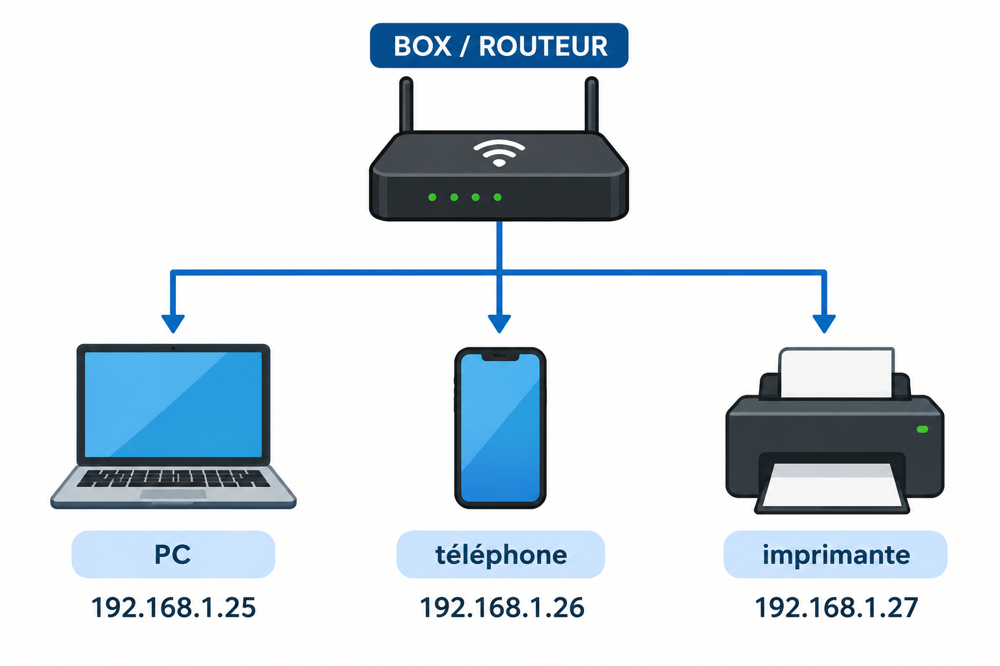
Ces adresses permettent aux appareils de communiquer à l'intérieur du réseau local.
Mais comment notre réseau communique-t-il avec Internet ?
La box possède également une adresse IP publique.
À retenir
Une adresse IP privée est utilisée dans un réseau local.
Une adresse IP publique permet d'identifier une connexion ou une interface utilisée pour communiquer sur Internet.
Plusieurs appareils d'un même réseau local peuvent donc utiliser des adresses privées différentes tout en partageant une même connexion à Internet.
1.5 Les plages d'adresses privées¶
Les adresses IPv4 privées ne sont pas choisies au hasard. Certaines plages d'adresses sont réservées à l'utilisation dans les réseaux locaux.
Les principales plages d'adresses IP privées sont :
-
Classe A :
10.0.0.0à10.255.255.255
(utilisée pour les grands réseaux d'entreprise) -
Classe B :
172.16.0.0à172.31.255.255
(utilisée pour les réseaux de taille moyenne) -
Classe C :
192.168.0.0à192.168.255.255
(très courante dans les réseaux domestiques)
1.6 Communiquer avec une autre machine¶
Deux machines appartenant au même réseau peuvent communiquer directement à travers le réseau local. Le switch permet d'acheminer les trames entre les machines en utilisant leurs adresses MAC.
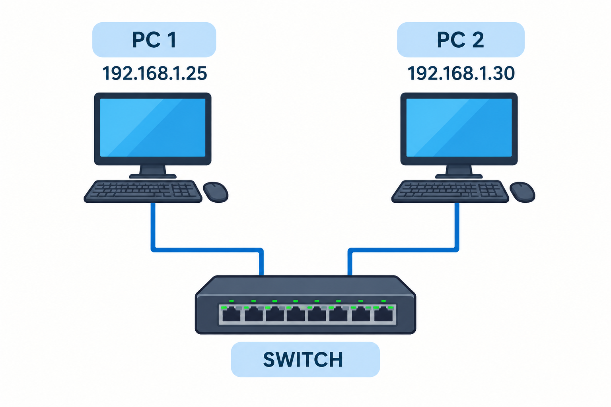
Les deux machines appartiennent au réseau :
Elles peuvent donc communiquer directement.
En revanche, si une machine souhaite communiquer avec une machine située sur un autre réseau, elle doit passer par un routeur.
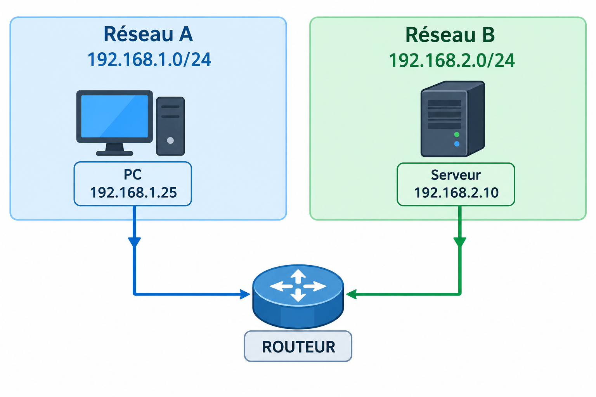
Le routeur possède une interface dans chacun des deux réseaux.
Il peut donc recevoir un paquet provenant du réseau 192.168.1.0/24 et le transmettre vers le réseau 192.168.2.0/24.
1.7 La passerelle par défaut¶
Pour communiquer avec une machine située en dehors de son réseau local, un ordinateur doit savoir à quel routeur transmettre le paquet.
L'adresse IP de ce routeur est appelée la passerelle par défaut.
Par exemple, un ordinateur peut avoir la configuration suivante :
La passerelle 192.168.1.254 est l'adresse du routeur sur le réseau local.
Si l'ordinateur souhaite communiquer avec 192.168.1.50, il constate que cette adresse appartient au même réseau que lui 192.168.1.0/24. Il peut donc communiquer directement avec cette machine.
En revanche, s'il souhaite communiquer avec 192.168.2.10 cette adresse appartient à un autre réseau. L'ordinateur transmet alors le paquet à sa passerelle par défaut.
À retenir
- Si le destinataire est sur le même réseau, la machine peut communiquer directement avec lui.
- Si le destinataire est sur un autre réseau, le paquet doit être envoyé à une passerelle, généralement un routeur.
- Le routeur se charge ensuite de déterminer vers quel réseau transmettre le paquet.
C'est cette dernière fonction qui constitue le routage.
2. Le routage¶
Jusqu'à présent, nous avons vu qu'un ordinateur peut communiquer directement avec une machine de son réseau et qu'il utilise une passerelle pour communiquer avec une machine située sur un autre réseau.
Mais que fait réellement le routeur lorsqu'il reçoit un paquet ?
Son rôle est de déterminer vers où transmettre le paquet afin qu'il atteigne son destinataire.
C'est ce que l'on appelle le routage.
Exercice 2
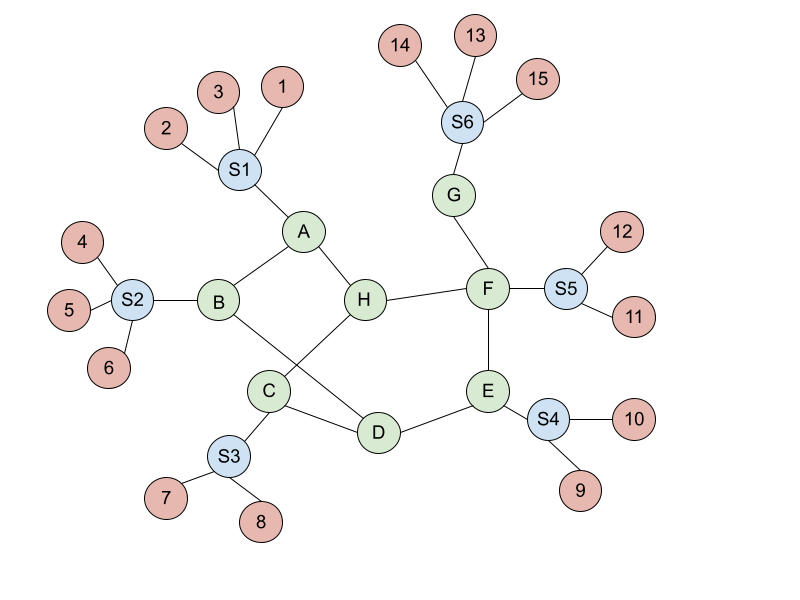
-
Donner tous les chemins possibles pour aller du point 4 au point 7 (sans allers-retours). Exemple de chemin entre 12 et 14 :
12 -> S5 -> F -> G -> S6 -> 14. -
Donner tous les chemins possibles pour aller du point 1 au point 9 (sans allers-retours).
-
Selon vous, à quoi pourraient correspondre les différentes couleurs si l'on considère le graphe comme étant un réseau informatique ?
-
En considérant qu'il s'agit d'un réseau, entourer les différents réseaux locaux.
Exercice 3
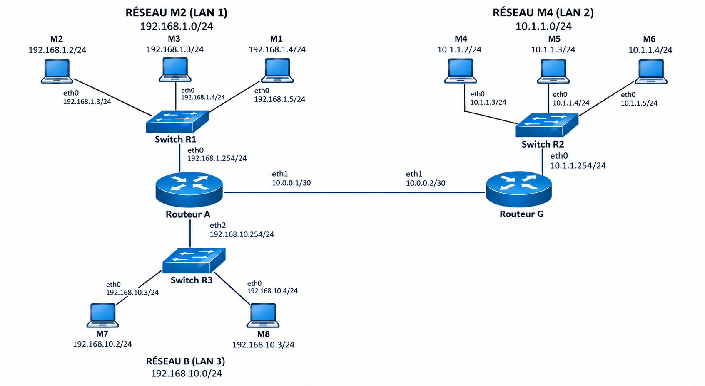
-
Sur la figure ci-dessus, entourer les différents réseaux locaux.
-
La machine
192.168.1.3(M3) souhaite envoyer un paquet à la machine10.1.1.4(M6). Quel chemin sera emprunté par le paquet ? -
Pour chaque réseau, indiquer les informations suivantes :
- adresse du réseau ;
- nombre d'hôtes possibles sur le réseau ;
- adresse de diffusion ;
- première adresse utilisable ;
- dernière adresse utilisable.
Exercice 4
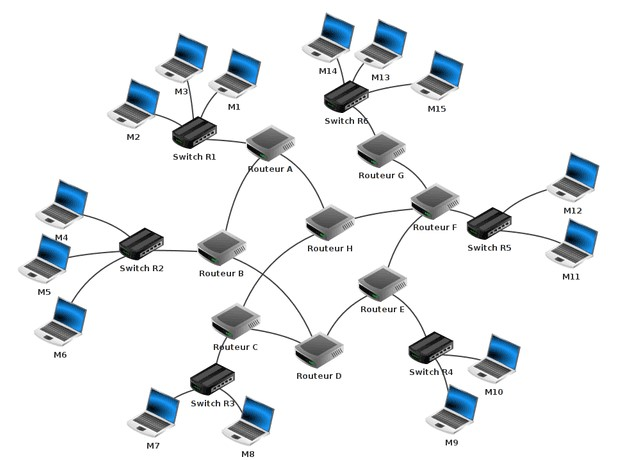
-
La machine M1 souhaite envoyer un paquet à la machine M9. À l'aide de la figure ci-dessus, indiquer tous les chemins possibles de la source à la destination (sans aller-retour).
-
Quel(s) paramètre(s) le routeur A pourrait-il prendre en compte pour sélectionner le meilleur chemin afin de transmettre ce paquet ?
-
Comment le routeur A peut-il connaître et mémoriser les différents chemins possibles vers les autres réseaux ?
-
Sous quelle forme le routeur peut-il mémoriser ces informations afin de pouvoir les utiliser pour acheminer les paquets ?
2.1 Le principe du routage¶
Considérons le réseau suivant :
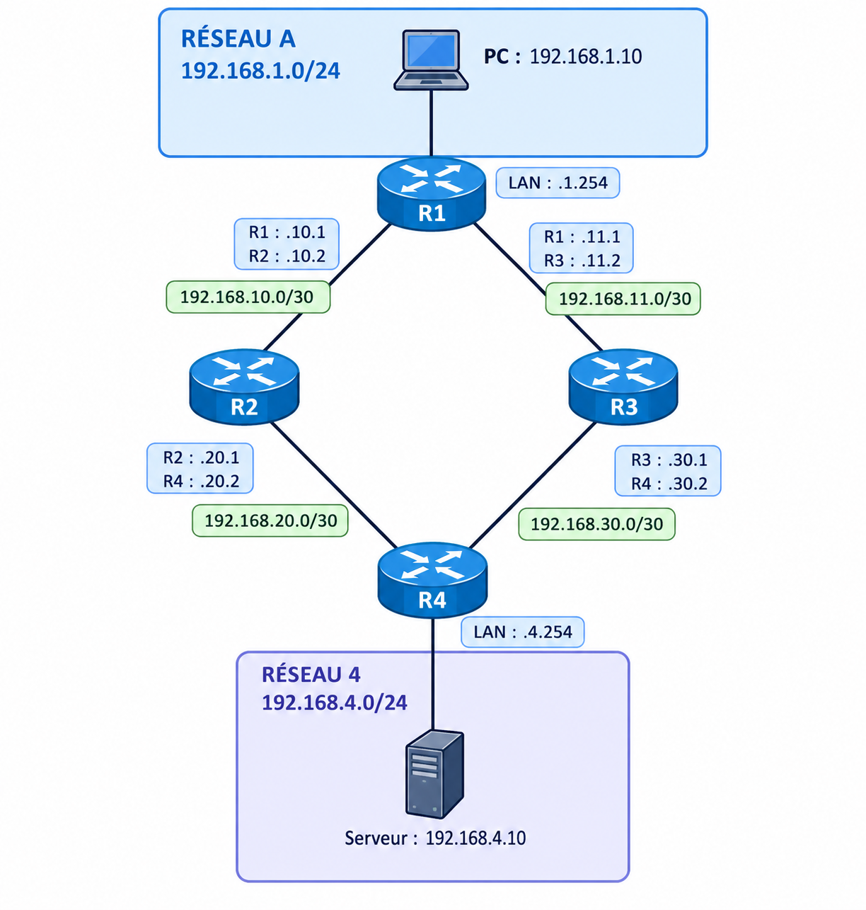
Le PC 192.168.1.10 souhaite communiquer avec le serveur
192.168.4.10.
Ces deux machines ne sont pas dans le même réseau :
Le PC ne peut donc pas envoyer directement le paquet au serveur.
Il doit l'envoyer à son routeur, R1.
R1 doit ensuite déterminer vers quel autre routeur transmettre le paquet.
Il existe ici deux chemins possibles :
ou :
À retenir
Le routage permet d'acheminer des paquets entre différents réseaux en déterminant vers quel routeur les transmettre.
2.2 La table de routage¶
Pour effectuer ce travail, chaque routeur possède une table de routage.
Cette table contient notamment :
- les réseaux de destination que le routeur connaît ;
- le prochain saut, c'est-à-dire le routeur auquel transmettre le paquet ;
- l'interface par laquelle transmettre le paquet.
Pour notre réseau, R1 peut avoir la table suivante :
| Réseau de destination | Prochain saut | Interface |
|---|---|---|
192.168.1.0/24 |
— | eth0 |
192.168.10.0/30 |
— | eth1 |
192.168.11.0/30 |
— | eth2 |
192.168.4.0/24 |
192.168.10.2 |
eth1 |
0.0.0.0/0 |
192.168.11.2 |
eth2 |
Cette table permet à R1 de prendre une décision en fonction de l'adresse IP de destination du paquet.
2.3 Les routes directement connectées¶
Les trois premières lignes correspondent à des réseaux directement connectés à R1 :
R1 possède directement une interface dans chacun de ces réseaux.
Par exemple :
192.168.1.0/24est connecté àeth0;192.168.10.0/30est connecté àeth1;192.168.11.0/30est connecté àeth2.
Le symbole — dans la colonne Prochain saut signifie qu'aucun autre routeur n'est nécessaire pour atteindre ces réseaux.
À retenir
Une route directement connectée correspond à un réseau auquel une interface du routeur est directement reliée.
2.4 Le prochain saut¶
Considérons maintenant la ligne :
| Réseau de destination | Prochain saut | Interface |
|---|---|---|
192.168.4.0/24 |
192.168.10.2 |
eth1 |
Le réseau 192.168.4.0/24 n'est pas directement connecté à R1.
Pour l'atteindre, R1 doit transmettre le paquet à un autre routeur.
L'adresse 192.168.10.2 est celle de l'interface de R2 reliée à R1.
On appelle cette adresse le prochain saut (next hop).
Ainsi, si R1 reçoit un paquet destiné à 192.168.4.10, il effectue le raisonnement suivant :
Destination : 192.168.4.10
↓
Réseau de destination : 192.168.4.0/24
↓
Prochain saut : 192.168.10.2
↓
Interface de sortie : eth1
Le paquet est donc transmis à R2.
À retenir
Le prochain saut est le routeur voisin auquel le routeur actuel transmet le paquet pour poursuivre son trajet.
2.5 La route par défaut¶
La dernière ligne de la table de routage de R1 est :
| Réseau de destination | Prochain saut | Interface |
|---|---|---|
0.0.0.0/0 |
192.168.11.2 |
eth2 |
0.0.0.0/0 correspond à la route par défaut.
Elle signifie :
Si aucune autre route plus précise ne correspond à la destination, utiliser cette route.
Dans notre exemple, R1 transmet alors le paquet à 192.168.11.2, qui correspond à l'interface de R3.
La route par défaut permet donc à R1 d'envoyer des paquets vers des réseaux pour lesquels il ne possède pas de route plus précise.
À retenir
0.0.0.0/0 est la route par défaut.
Elle est utilisée lorsqu'aucune route plus précise ne correspond à la destination.
2.6 Suivre un paquet dans le réseau¶
On peut maintenant suivre le trajet d'un paquet envoyé par le PC vers le serveur.
Le PC possède l'adresse :
Le serveur possède l'adresse :
Le PC sait que le serveur n'appartient pas à son propre réseau
192.168.1.0/24.
Il transmet donc le paquet à sa passerelle par défaut :
R1 consulte ensuite sa table de routage.
Il trouve :
Il transmet donc le paquet à R2 :
R2 consulte à son tour sa propre table de routage et détermine
comment atteindre 192.168.4.0/24.
Supposons que R2 transmette le paquet à R4 :
R4 est directement connecté au réseau 192.168.4.0/24.
Il transmet alors le paquet au serveur :
Le chemin complet est donc :
À retenir
À chaque étape, le routeur :
- regarde l'adresse IP de destination ;
- consulte sa table de routage ;
- détermine où transmettre le paquet ;
- transmet le paquet au prochain routeur.
Le processus se répète jusqu'à atteindre le réseau de destination.
3. Le routage statique¶
3.1 Principe¶
Dans le routage statique, les routes sont configurées manuellement par l'administrateur du réseau.
Par exemple, R1 connaît directement :
Mais le réseau 192.168.20.0/30 n'est pas directement connecté à R1.
L'administrateur peut donc ajouter une route indiquant :
Cela signifie :Pour atteindre le réseau
192.168.20.0/30, transmettre le paquet à R2.
La table de R1 contient alors notamment :
| Réseau de destination | Prochain saut | Interface |
|---|---|---|
192.168.1.0/24 |
— | eth0 |
192.168.10.0/30 |
— | eth1 |
192.168.11.0/30 |
— | eth2 |
192.168.20.0/30 |
192.168.10.2 |
eth1 |
192.168.4.0/24 |
192.168.10.2 |
eth1 |
0.0.0.0/0 |
192.168.11.2 |
eth2 |
À retenir
Avec le routage statique, les routes sont configurées manuellement par l'administrateur.
3.2 Limites du routage statique¶
Le routage statique fonctionne bien pour un petit réseau.
Mais lorsque le réseau devient plus important, la configuration peut devenir lourde.
Imaginons qu'un nouveau réseau soit ajouté :
L'administrateur doit configurer les routes nécessaires sur les routeurs concernés.
Si le réseau comporte beaucoup de routeurs et de réseaux, le nombre de routes à configurer devient important.
De plus, si une liaison tombe en panne, une route statique peut devenir inutilisable.
Par exemple :
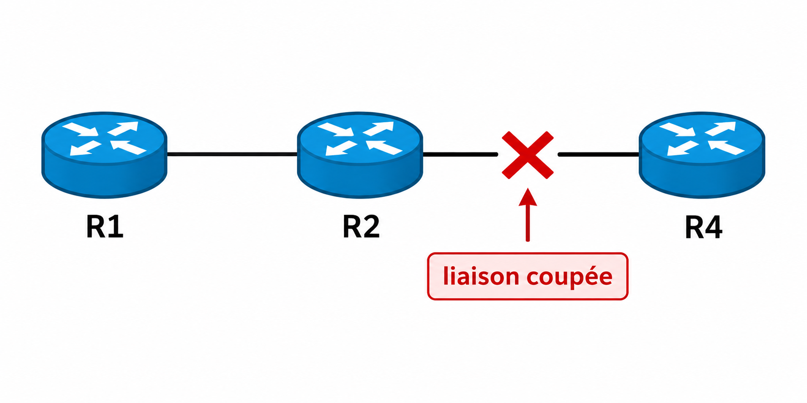
Si R1 utilisait R2 pour atteindre R4, la route peut ne plus fonctionner.
À retenir
Le routage statique est simple mais devient difficile à maintenir lorsque le réseau est important ou évolue fréquemment.
Exercice 5
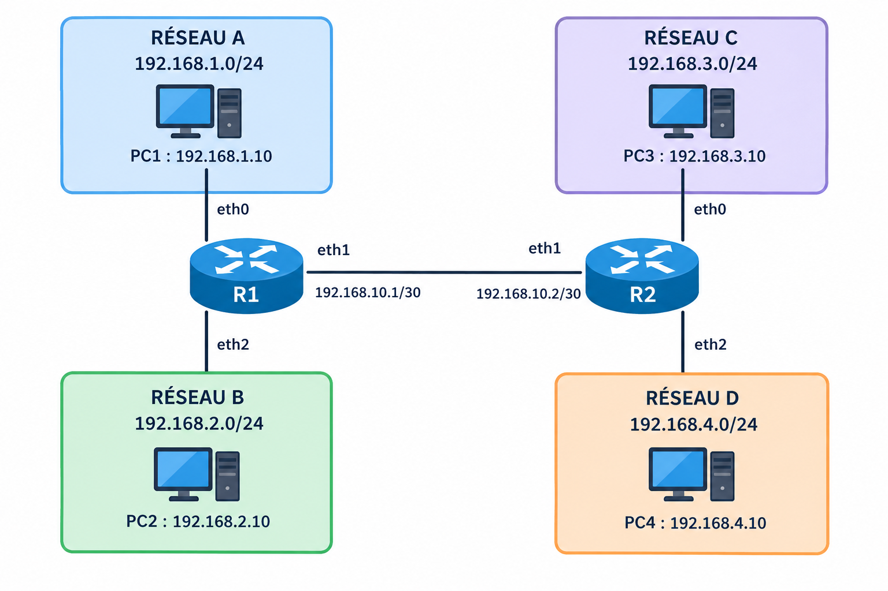
À partir du réseau donné ci-dessus, remplir la table de routage du routeur R1 possédant trois interfaces.
| Destination | Prochain saut (Passerelle) | Interface | Distance |
|---|---|---|---|
4. Le routage dynamique¶
4.1 Principe¶
Avec le routage dynamique, les routeurs échangent automatiquement des informations sur les réseaux qu'ils connaissent.
Ils utilisent pour cela des protocoles de routage.
Dans notre réseau, R1 peut par exemple apprendre automatiquement que les réseaux suivants sont accessibles :
R1 n'a donc pas besoin que l'administrateur configure manuellement chacune de ces routes.
Les routeurs échangent des informations et construisent progressivement une connaissance du réseau.
À retenir
Avec le routage dynamique, les routes peuvent être apprises automatiquement grâce aux échanges entre les routeurs.
4.2 Apprentissage des routes¶
Dans notre réseau, R1 connaît directement :
Grâce au routage dynamique, R1 peut apprendre l'existence d'autres réseaux.
Par exemple :
R1 peut alors construire automatiquement des routes vers ces réseaux.
Si un nouveau réseau est ajouté au réseau, les routeurs peuvent également apprendre cette nouvelle information sans que l'administrateur ait besoin de configurer manuellement chaque route.
4.3 Plusieurs chemins possibles¶
Notre réseau possède plusieurs chemins entre R1 et R4.
Pour atteindre le réseau 192.168.4.0/24, R1 peut donc utiliser :
ou :
Lorsqu'il existe plusieurs chemins possibles, le protocole de routage utilise une métrique pour déterminer quel chemin est le plus intéressant.
La métrique dépend du protocole utilisé.
À retenir
Le routage dynamique permet aux routeurs de découvrir les réseaux et de choisir automatiquement des chemins.
5. Le protocole RIP¶
5.1 Principe¶
Le protocole RIP (Routing Information Protocol) est un protocole de routage dynamique dit à vecteur de distance.
L'objectif de ce protocole est de déterminer, pour chaque réseau, une route ayant le plus petit nombre de sauts, en s'appuyant sur l'algorithme des graphes Bellman-Ford.
Chaque routeur va construire sa table de routage en associant un réseau de destination à une distance, c'est-à-dire le nombre de sauts (hop count) nécessaires pour l'atteindre, puis va partager ces informations avec ses voisins.
À partir des informations reçues de ses voisins, chaque routeur va alors mettre à jour sa table de routage, si nécessaire, et la partager périodiquement (toutes les 30 secondes).
Par exemple :
correspond à 2 sauts.Alors que :
correspond à 3 sauts.
RIP choisira donc le premier chemin.
Toutes les 30 secondes, les routeurs vont s'échanger le contenu de leurs tables de routage. Chaque routeur devra ensuite trier les routes reçues pour conserver uniquement les plus intéressantes pour lui.
Plusieurs possibilités peuvent alors s'offrir à un routeur :
-
Il ne connaissait pas encore de route pour accéder à ce réseau.
→ Il ajoute cette route à sa table de routage. -
La route proposée pour atteindre ce réseau est plus courte que l'actuelle.
→ Il remplace son ancienne route par la nouvelle. -
Il possède une route plus courte que celle qui lui est proposée.
→ Il ignore la nouvelle route. -
Il connaissait déjà la route et elle provient du même routeur.
→ Il met à jour cette route car la topologie du réseau a été modifiée.
Attention !
Il est nécessaire d'ajouter 1 à la distance lorsqu'un routeur apprend une route d'un autre, car il faut prendre en compte la liaison entre ces deux routeurs.
À retenir
RIP utilise le nombre de sauts comme métrique.
Un chemin comportant moins de routeurs est considéré comme meilleur.
5.2 Limites de RIP¶
RIP est relativement simple, mais cette simplicité entraîne plusieurs limites.
Un nombre de sauts limité¶
RIP considère qu'un réseau situé à 16 sauts ou plus est inaccessible.
La métrique maximale utilisable pour une route est donc de 15 sauts.
Cela limite l'utilisation de RIP dans les grands réseaux.
Une métrique très simplifiée¶
RIP utilise essentiellement le nombre de routeurs traversés.
Il ne tient donc pas directement compte du débit des liaisons.
Si les deux chemins comportent le même nombre de sauts, RIP peut considérer qu'ils ont le même coût.
Pourtant, une liaison peut être beaucoup plus rapide que l'autre.
RIP ne permet donc pas de choisir un chemin en fonction de la qualité réelle des liaisons.
Une convergence relativement lente¶
Lorsqu'une modification intervient dans le réseau, les routeurs doivent échanger de nouvelles informations avant que leurs tables de routage soient mises à jour.
La convergence correspond au moment où les routeurs ont de nouveau une vision cohérente du réseau.
RIP peut donc être moins adapté aux réseaux importants ou aux réseaux dans lesquels la topologie change fréquemment.
À retenir
Les principales limites de RIP sont :
- un nombre de sauts limité à 15 ;
- une métrique très simple ;
- aucune prise en compte directe du débit des liaisons ;
- une convergence moins adaptée aux grands réseaux.
Exercice 6
Au départ, R1 ne connaît que les réseaux qui lui sont directement connectés.
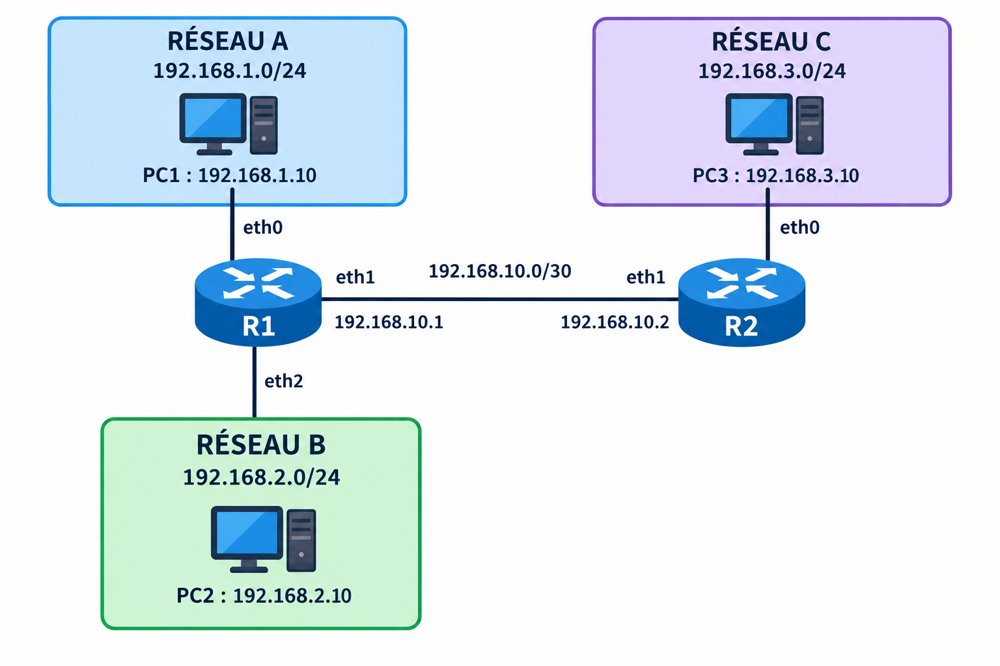
Il construit donc sa table de routage à partir des informations qu'il connaît lui-même :
| Destination | Prochain saut | Interface | Distance |
|---|---|---|---|
192.168.1.0/24 |
-- | eth0 | 0 |
192.168.2.0/24 |
-- | eth2 | 0 |
192.168.10.0/30 |
-- | eth1 | 0 |
R1 ne connaît pas encore le réseau 192.168.3.0/24.
-
R1 demande à son voisin R2 quels réseaux celui-ci connaît.
R2 lui répond :
« Je connais le réseau
192.168.3.0/24. Il se trouve à 1 saut de moi. »R1 décide de faire confiance à cette information.
a. Par quel routeur R1 doit-il passer pour atteindre le réseau
192.168.3.0/24?b. Par quelle interface R1 doit-il envoyer les paquets ?
c. Compléter la nouvelle ligne de la table de routage de R1.
Destination Prochain saut Interface Distance 192.168.1.0/24-- eth0 0 192.168.2.0/24-- eth2 0 192.168.10.0/30-- eth1 0 192.168.3.0/24 -
Plus tard, R2 annonce à R1 :
« Je connais également le réseau
192.168.4.0/24. Il se trouve à 2 sauts de moi. »R1 fait confiance à cette information et l'ajoute à sa table.
Compléter la table de routage de R1.
Destination Prochain saut Interface Distance 192.168.1.0/24-- eth0 0 192.168.2.0/24-- eth2 0 192.168.10.0/30-- eth1 0 192.168.3.0/24192.168.4.0/24 -
R2 annonce ensuite :
« Le réseau
192.168.4.0/24est maintenant à 1 saut de moi. »R1 possède déjà une route vers ce réseau.
R1 doit-il modifier sa table de routage ? Pourquoi ?
-
À partir de cet exemple, expliquer comment le protocole RIP permet à un routeur de construire et de mettre à jour sa table de routage.
Exercice 7
Soit un réseau composé de plusieurs routeurs reliés de la façon suivante :
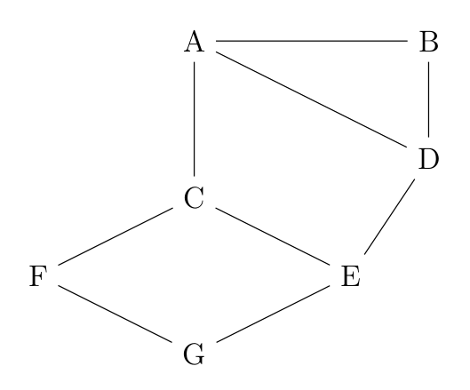
On suppose qu'au départ, chaque routeur ne connaît que les réseaux qui lui sont directement connectés.
Les routeurs échangent ensuite leurs informations de routage avec leurs voisins en utilisant le protocole RIP.
Construire la table de routage des routeurs A, E et F après les échanges d'informations.
6. Le protocole OSPF¶
6.1 Principe¶
OSPF (Open Shortest Path First) est un autre protocole de routage dynamique.
Contrairement à RIP, OSPF ne se contente pas de compter le nombre de routeurs traversés.
Les routeurs OSPF échangent des informations sur les liaisons du réseau.
Ils peuvent ainsi construire une représentation de la topologie du réseau.
On peut représenter cette topologie sous la forme d'un graphe :
- les routeurs sont représentés par des sommets ;
- les liaisons entre les routeurs sont représentées par des arêtes ;
- chaque liaison possède un coût.
Par exemple :
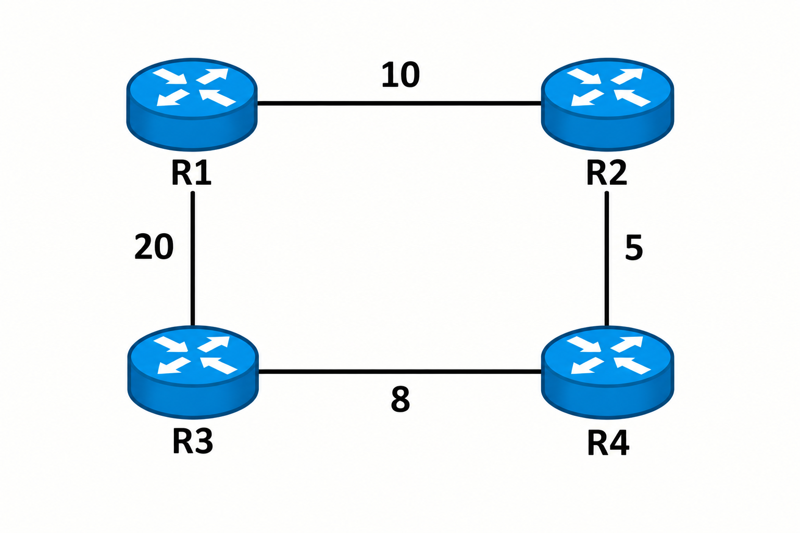
OSPF cherche alors un chemin dont la somme des coûts est minimale.
À retenir
OSPF choisit le chemin dont le coût total est le plus faible.
6.2 Le coût des liaisons¶
Le coût d'une liaison est appelé métrique OSPF.
Dans une configuration classique, le coût est lié au débit de la liaison.
Plus une liaison est rapide, plus son coût est faible.
Une formule couramment utilisée est :
La bande passante de référence est une valeur configurable dans OSPF.
Par exemple, si on utilise une bande passante de référence de
100 Mbit/s :
Une liaison de 100 Mbit/s aura alors :
À retenir
Dans OSPF, le coût d'une liaison dépend notamment de sa bande passante.
Plus le coût est faible, plus la liaison est intéressante pour construire une route.
6.3 Calcul du coût d'un chemin¶
Pour déterminer le meilleur chemin, OSPF additionne les coûts de toutes les liaisons empruntées.
Par exemple, considérons les deux chemins suivants entre R1 et R4 :
et :
OSPF choisira le chemin dont le coût total est le plus faible, ici le chemin 1.
À retenir
OSPF utilise le coût des liaisons pour choisir un chemin.
Le meilleur chemin est celui dont le coût total est le plus faible.
Exercice 8
Contrairement au protocole RIP, l'objectif n'est plus de minimiser le nombre de routeurs traversés par un paquet.
Dans le protocole OSPF, la notion de distance repose sur le coût des liaisons. L'objectif est alors de choisir le chemin dont la somme des coûts des liaisons traversées est la plus faible.
Le coût d'une liaison est donné par la formule suivante :
où \(d\) représente la bande passante de la liaison, exprimée en bit/s.
On rappelle que :
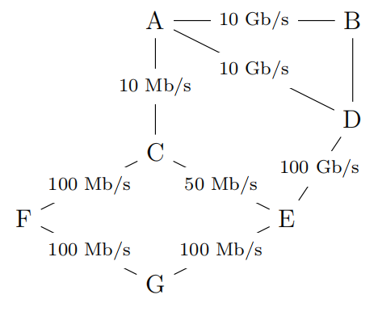
-
Vérifier que le coût de la liaison entre les routeurs A et B est égal à 0,01.
-
La liaison entre le routeur B et D a un coût de 5. Quel est le débit de cette liaison ?
-
Le routeur A doit transmettre un message au routeur G. En appliquant le protocole OSPF, déterminer le chemin choisi par le message en minimisant la somme des coûts des liaisons traversées. Détailler le raisonnement utilisé.
6.4 L'algorithme de Dijkstra¶
Pour déterminer le meilleur chemin, OSPF utilise l'algorithme de Dijkstra.
L'idée générale est de partir d'un routeur et de rechercher progressivement les chemins de coût minimal vers les autres routeurs.
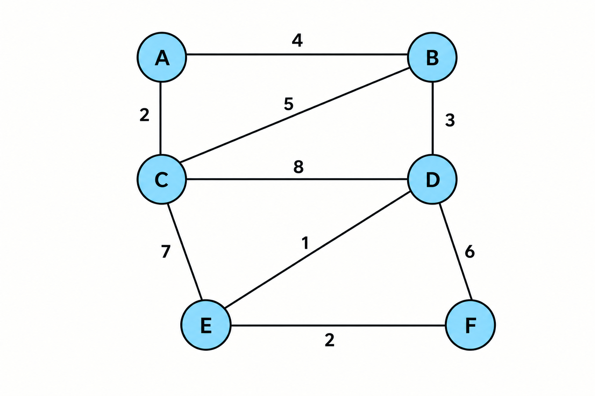
On cherche le meilleur chemin de A vers F.
Étape 1 : initialisation¶
On commence à A.
Le coût pour atteindre A depuis A est 0.
Les voisins directs de A sont connus :
- B est à un coût de
4; - C est à un coût de
2.
Les autres routeurs sont encore inconnus : on note leur coût ∞.
| A | B | C | D | E | F | Sélectionné |
|---|---|---|---|---|---|---|
| 0 | 4 | 2 | ∞ | ∞ | ∞ | A |
On sélectionne ensuite le routeur non sélectionné dont le coût est le plus faible :
Étape 2 : sélection de C¶
Depuis C, on peut atteindre A, B, D et E.
Pour B :
Pour D :
Pour E :
Le tableau devient :
| A | B | C | D | E | F | Sélectionné |
|---|---|---|---|---|---|---|
| 0 | 4 | 2 | ∞ | ∞ | ∞ | A |
| 0 | 4 | 2 | 10 | 9 | ∞ | C |
Le plus petit coût non sélectionné est maintenant 4.
On peut sélectionner B.
Étape 3 : sélection de B¶
Depuis B, on peut atteindre A, C et D.
Pour C :
Pour D :
On connaissait auparavant un chemin vers D de coût 10.
On améliore donc le coût :
Le tableau devient :
| A | B | C | D | E | F | Sélectionné |
|---|---|---|---|---|---|---|
| 0 | 4 | 2 | ∞ | ∞ | ∞ | A |
| 0 | 4 | 2 | 10 | 9 | ∞ | C |
| 0 | 4 | 2 | 7 | 9 | ∞ | B |
Le plus petit coût non sélectionné est maintenant 7.
On peut sélectionner D.
Étape 4 : sélection de D¶
Depuis D, on peut atteindre B, C, E et F.
Pour E :
On connaissait auparavant un chemin vers E de coût 9.
On améliore donc le coût :
Pour F :
On obtient donc un premier chemin vers F de coût 13.
Le tableau devient :
| A | B | C | D | E | F | Sélectionné |
|---|---|---|---|---|---|---|
| 0 | 4 | 2 | ∞ | ∞ | ∞ | A |
| 0 | 4 | 2 | 10 | 9 | ∞ | C |
| 0 | 4 | 2 | 7 | 9 | ∞ | B |
| 0 | 4 | 2 | 7 | 8 | 13 | D |
Le plus petit coût non sélectionné est maintenant 8.
On peut sélectionner E.
Étape 5 : sélection de E¶
Depuis E, on peut atteindre C, D et F.
Pour F :
On connaissait auparavant un chemin vers F de coût 13.
On améliore donc le coût :
Le tableau devient :
| A | B | C | D | E | F | Sélectionné |
|---|---|---|---|---|---|---|
| 0 | 4 | 2 | ∞ | ∞ | ∞ | A |
| 0 | 4 | 2 | 10 | 9 | ∞ | C |
| 0 | 4 | 2 | 7 | 9 | ∞ | B |
| 0 | 4 | 2 | 7 | 8 | 13 | D |
| 0 | 4 | 2 | 7 | 8 | 10 | E |
Le plus petit coût non sélectionné est maintenant 10.
On peut sélectionner F.
Étape 6 : sélection de F¶
F est notre destination.
Le coût minimal pour atteindre F depuis A est donc 10.
L'algorithme peut s'arrêter.
Retrouver le chemin¶
Pour retrouver le chemin, on conserve pour chaque routeur le routeur précédent ayant permis d'obtenir son meilleur coût.
Pour F, le meilleur coût 10 a été obtenu en passant par E.
Pour E, le meilleur coût 8 a été obtenu en passant par D.
Pour D, le meilleur coût 7 a été obtenu en passant par B.
Pour B, le meilleur coût 4 a été obtenu directement depuis A.
On remonte alors le chemin :
En remettant le chemin dans le bon sens :
Le meilleur chemin de A vers F est donc :
Son coût total est :
Le coût minimal est donc 10.
À retenir
OSPF utilise l'algorithme de Dijkstra pour rechercher les chemins de coût minimal.
Exercice 9
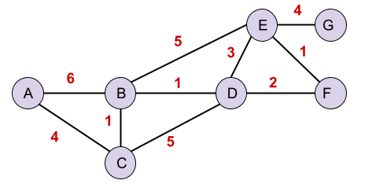
À l'aide de l'algorithme de Dijkstra, déterminer le plus court chemin entre les sommets A et G.
Compléter le tableau au fur et à mesure des étapes de l'algorithme en indiquant, pour chaque sommet, la distance minimale connue et son prédécesseur.
| Étape | A | B | C | D | E | F | G | Sélectionné |
|---|---|---|---|---|---|---|---|---|
| 0 | ||||||||
| 1 | ||||||||
| 2 | ||||||||
| 3 | ||||||||
| 4 | ||||||||
| 5 | ||||||||
| 6 | ||||||||
| 7 |
6.5 Que se passe-t-il en cas de panne ?¶
L'un des avantages du routage dynamique est de pouvoir s'adapter aux modifications du réseau.
Imaginons que le chemin suivant soit utilisé :
Si la liaison entre R2 et R4 tombe en panne, OSPF détecte la modification de la topologie du réseau.
Il peut alors rechercher un autre chemin, par exemple :
Le réseau peut donc continuer à fonctionner sans que l'administrateur ait besoin de modifier manuellement les tables de routage.
À retenir
Le routage dynamique permet aux routeurs de s'adapter aux changements de la topologie du réseau.
6.6 Avantages et limites d'OSPF¶
OSPF présente plusieurs avantages :
- il prend en compte le coût des liaisons ;
- il peut choisir le meilleur chemin parmi plusieurs chemins possibles ;
- il s'adapte aux changements de la topologie du réseau ;
- il est adapté aux réseaux importants.
Mais OSPF est également plus complexe que RIP.
Les routeurs doivent échanger et conserver des informations sur la topologie du réseau. Cela nécessite davantage de mémoire et de ressources.
À retenir
OSPF est plus puissant et plus adapté aux grands réseaux que RIP, mais il est également plus complexe.
7. Les réseaux privés et l'accès à Internet¶
Nous avons vu qu'une machine possède généralement une adresse IP privée dans son réseau local.
Mais cette adresse ne peut pas être utilisée directement pour communiquer sur Internet.
Par exemple, un ordinateur peut avoir l'adresse :
Cette adresse est une adresse privée.
La box possède quant à elle une adresse IP publique qui lui permet de communiquer avec Internet.
On obtient donc une organisation de ce type :
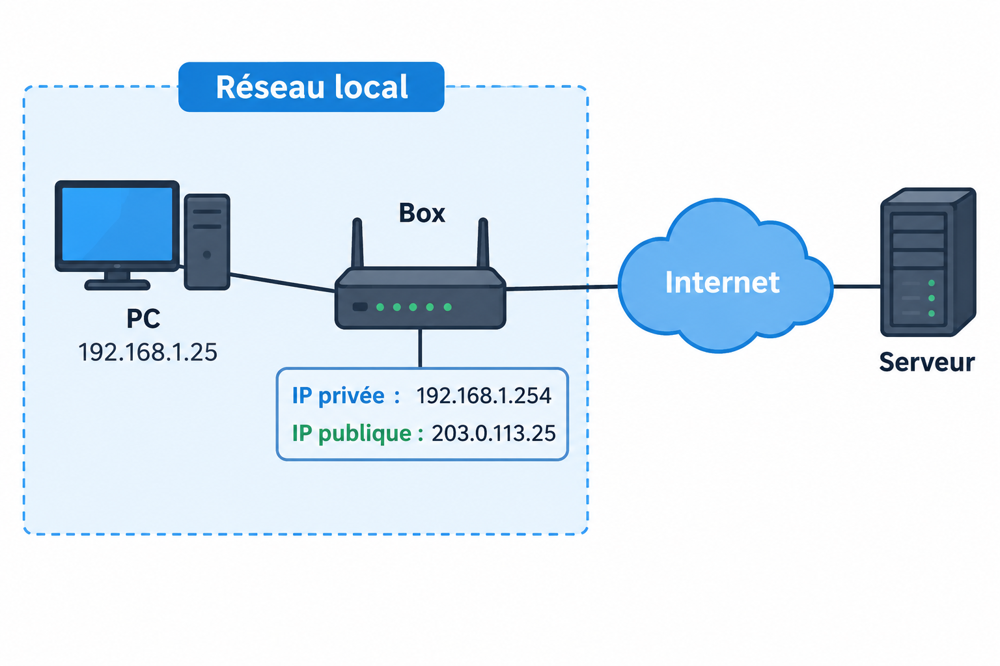
Le PC utilise donc son adresse privée pour communiquer avec les machines de son réseau local.
Pour communiquer avec Internet, il doit passer par la box.
À retenir
Une machine d'un réseau local utilise généralement une adresse IP privée.
La box possède une adresse IP publique pour communiquer avec Internet.
Il faut donc un mécanisme permettant de faire communiquer les adresses privées du réseau local avec Internet.
C'est notamment le rôle du NAT.
8. Le NAT¶
8.1 Principe¶
NAT signifie Network Address Translation, c'est-à-dire traduction d'adresses réseau.
Le NAT permet à un routeur de modifier les adresses IP lors du passage d'un réseau à un autre.
Dans un réseau domestique, le routeur peut notamment remplacer l'adresse IP privée d'une machine par son adresse IP publique.
Par exemple :
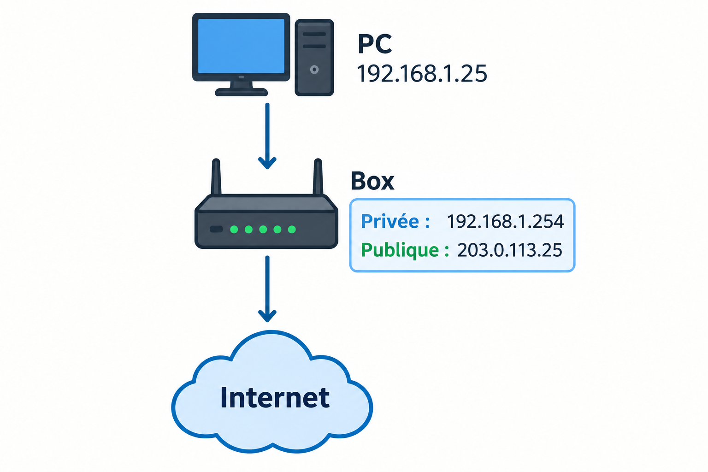
Lorsque le PC envoie un paquet vers Internet, la box peut remplacer l'adresse IP source privée :
par son adresse IP publique :
Le serveur situé sur Internet voit donc la requête comme provenant de l'adresse publique de la box.8.2 Exemple de traduction¶
Imaginons que le PC 192.168.1.25 souhaite communiquer avec un serveur
Internet 93.184.216.34.
Avant le NAT, le paquet peut être représenté ainsi :
La box traduit alors l'adresse source : Le serveur Internet reçoit donc un paquet provenant de l'adresse publique de la box.À retenir
Le NAT permet à un routeur de traduire une adresse IP privée en adresse IP publique.
8.3 Pourquoi utiliser le NAT ?¶
Le NAT présente plusieurs intérêts.
Tout d'abord, il permet à des machines utilisant des adresses IP privées de communiquer avec Internet.
Il permet également à plusieurs machines d'un même réseau local d'utiliser une même adresse IP publique.
Par exemple :
PC 1 : 192.168.1.10 ─┐
│
PC 2 : 192.168.1.20 ─┼──► Box ───► Internet
│
PC 3 : 192.168.1.30 ─┘
Adresse publique :
203.0.113.25
Les trois machines utilisent des adresses privées différentes, mais peuvent partager la même adresse IP publique.
C'est particulièrement important car le nombre d'adresses IPv4 publiques est limité.
À retenir
Le NAT permet notamment à plusieurs machines d'un réseau local d'accéder à Internet en utilisant une même adresse IP publique.
8.4 Le NAT et le retour des paquets¶
Lorsqu'un PC communique avec un serveur sur Internet, les paquets circulent dans les deux directions.
La box doit donc être capable de savoir à quelle machine du réseau local faire parvenir les réponses.
Elle conserve pour cela des informations sur les traductions effectuées.
Par exemple :
Lorsque le serveur répond, la box peut retrouver la machine à laquelle la réponse doit être envoyée.Cette association devient particulièrement importante lorsque plusieurs machines utilisent simultanément la même adresse publique.
C'est le rôle du PAT, que nous allons étudier ensuite.
9. Le PAT : plusieurs machines avec une seule adresse publique¶
9.1 Principe¶
PAT signifie Port Address Translation.
Le PAT est une forme de traduction qui utilise également les numéros de port pour différencier les différentes communications.
Cela permet à plusieurs machines du réseau local de partager une seule adresse IP publique.
Par exemple :
PC 1
192.168.1.10:5000
│
│
▼
┌──────────────┐
│ Box │
│ │
│ 203.0.113.25 │
└──────────────┘
▲
│
PC 2
192.168.1.20:5001
Par exemple :
Les deux communications utilisent donc la même adresse IP publique : mais des ports différents.La box conserve une table de correspondance afin de savoir à quelle machine locale transmettre les réponses.
9.2 Exemple de table PAT¶
La box peut conserver une table ressemblant à :
| Adresse privée | Port privé | Adresse publique | Port public |
|---|---|---|---|
192.168.1.10 |
5000 |
203.0.113.25 |
6000 |
192.168.1.20 |
5001 |
203.0.113.25 |
6001 |
192.168.1.30 |
5002 |
203.0.113.25 |
6002 |
Grâce à cette table, la box sait à quelle machine transmettre chaque réponse.
À retenir
Le PAT utilise les numéros de port pour différencier plusieurs communications utilisant la même adresse IP publique.
Il permet ainsi à plusieurs machines d'un réseau local de partager une seule adresse IPv4 publique.
10. Les ports TCP et UDP¶
10.1 Pourquoi utiliser des ports ?¶
Une adresse IP permet d'identifier une machine sur un réseau.
Mais une machine peut exécuter plusieurs applications simultanément.
Par exemple, un ordinateur peut utiliser en même temps :
- un navigateur Web ;
- une application de messagerie ;
- un jeu en ligne ;
- un serveur Web.
Il faut donc pouvoir identifier l'application destinataire d'un paquet.
C'est le rôle des ports.
Un port est un numéro compris entre 0 et 65535.
Une communication TCP ou UDP est donc notamment identifiée par :
Par exemple :
désigne l'adresse IP192.168.1.25 et le port 443.
10.2 Les ports TCP¶
Le protocole TCP utilise des numéros de port pour identifier les applications qui communiquent.
Certains ports sont associés à des services courants.
Par exemple :
| Port | Service |
|---|---|
80 |
HTTP |
443 |
HTTPS |
22 |
SSH |
53 |
DNS |
Lorsqu'un navigateur souhaite communiquer avec un serveur Web HTTPS,
il utilise généralement le port 443 du serveur.
On peut alors représenter la communication ainsi :
Le port 5000 peut être choisi temporairement par le client,
tandis que le serveur écoute sur le port 443.
10.3 Les ports UDP¶
Le protocole UDP utilise également des numéros de port.
Par exemple, DNS utilise généralement le port 53.
À retenir
Une adresse IP permet d'identifier une machine.
Un numéro de port permet d'identifier une application ou un service sur cette machine.
On peut donc représenter une destination par :
adresse IP + port
11. La redirection de ports¶
11.1 Le problème¶
Nous avons vu que le NAT permet aux machines d'un réseau local d'accéder à Internet.
Mais que se passe-t-il si une personne située sur Internet souhaite contacter directement un serveur situé dans le réseau local ?
Par exemple :
Internet
│
│
▼
┌──────────────┐
│ Box │
│ 203.0.113.25 │
└──────────────┘
│
│
▼
Serveur
192.168.1.100
Le serveur possède une adresse privée :
Cette adresse n'est pas directement accessible depuis Internet.Il faut donc indiquer à la box ce qu'elle doit faire lorsqu'elle reçoit une connexion sur un certain port.
C'est le rôle de la redirection de port.
11.2 Principe¶
On peut configurer la box pour rediriger un port public vers une machine du réseau local.
Par exemple :
Lorsqu'un paquet arrive sur l'adresse publique de la box avec le port443, la box le transmet au serveur local
192.168.1.100 sur le port 443.
On obtient alors :
À retenir
Une redirection de port permet de rendre accessible depuis Internet un service situé sur une machine du réseau local.
11.3 Exemple¶
Supposons qu'un serveur Web soit installé sur :
et qu'il écoute sur le port 80.On peut configurer la box avec la règle :
| Port public | Adresse privée | Port privé |
|---|---|---|
80 |
192.168.1.100 |
80 |
Une personne située sur Internet peut alors contacter :
La box transmettra la connexion vers :12. Le pare-feu¶
12.1 Principe¶
Un pare-feu (firewall) est un dispositif permettant de contrôler les communications réseau.
Il peut autoriser ou bloquer des communications en fonction de différentes informations :
- l'adresse IP source ;
- l'adresse IP destination ;
- le protocole utilisé ;
- le numéro de port ;
- le sens de la communication.
Par exemple, un pare-feu peut autoriser :
tout en bloquant :12.2 Le pare-feu et la box¶
Une box peut jouer plusieurs rôles :
┌──────────────────────────────┐
│ BOX │
│ │
│ Routeur │
│ NAT / PAT │
│ Pare-feu │
│ Redirection de ports │
│ │
└──────────────────────────────┘
À retenir
Un pare-feu contrôle les communications réseau afin d'autoriser certaines connexions et d'en bloquer d'autres.
13. Exemple complet : du réseau local à Internet¶
Nous pouvons maintenant réunir les différentes notions étudiées.
Un ordinateur du réseau local possède :
La box possède l'adresse publique : Le PC souhaite consulter un serveur Web : Le paquet suit alors plusieurs étapes :- le PC constate que le serveur n'appartient pas à son réseau local ;
- il transmet le paquet à sa passerelle par défaut ;
- la box effectue une traduction NAT/PAT ;
- le paquet est envoyé sur Internet avec l'adresse publique de la box ;
- le serveur reçoit la requête sur le port
443; - la réponse revient vers l'adresse publique de la box ;
- la box utilise sa table NAT/PAT pour retrouver le PC à l'origine de la communication ;
- le paquet est transmis au PC.
On peut représenter le trajet ainsi :
PC
192.168.1.25:5000
│
▼
Passerelle
192.168.1.254
│
▼
BOX
203.0.113.25:6000
│
▼
Internet
│
▼
93.184.216.34:443
À retenir
Pour communiquer sur Internet, une machine d'un réseau local peut utiliser une adresse IP privée et passer par une box qui réalise notamment le routage et la traduction d'adresses.
Les ports permettent ensuite d'identifier les applications et les services utilisés lors de la communication.